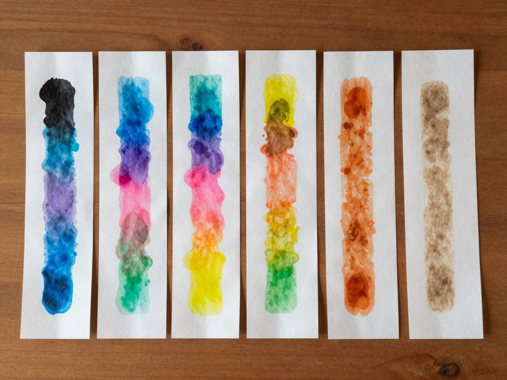

전체 단원 › 실험·활동 › 4학년 1학기 과학
사인펜 색 분리

검은색 사인펜 속에 숨어 있는 여러 가지 색을 물 한 컵으로 찾아내요.
20분 · 난이도 ★☆☆ 쉬움
준비물
- 커피 필터 — 키친타월로 바꿔도 돼요
- 수성 사인펜 — 검정, 갈색, 초록 등 여러 색. 유성 매직은 번지지 않아요.
- 투명 컵 2~3개 — 유리컵이나 투명 플라스틱 컵
- 연필 — 컵 위에 걸치는 막대 (나무젓가락도 OK)
- 물, 테이프, 가위 — 수돗물이면 충분해요
만드는 방법
- 띠 자르기
커피 필터를 폭 2cm, 길이 10cm 정도의 띠로 잘라요. 색마다 하나씩 여러 개 만들어요. - 점 찍기
띠 아래 끝에서 2cm 위에 사인펜으로 콩알만 한 점을 진하게 찍어요. 띠 위쪽에는 연필로 어떤 색인지 적어 둬요. - 컵에 걸기
컵에 물을 1cm 정도만 붓고, 띠 위쪽을 연필에 테이프로 붙여 컵 위에 걸쳐요. 띠 끝만 물에 닿고 점은 물보다 위에 있어야 해요. - 기다리며 지켜보기
10~15분 동안 물이 띠를 타고 올라가는 모습을 지켜봐요. 물이 위쪽 끝 가까이 오면 꺼내서 말려요. - 나란히 비교하기
마른 띠를 나란히 놓고 각 색에 어떤 색들이 숨어 있었는지 비교해요. 맨 위 사진처럼요!
관찰해 봐요
- 검은색 점은 어떤 색들로 나뉘었나요?
- 가장 높이 올라간 색과 가장 낮게 남은 색은 무엇인가요?
- 회사가 다른 검은 사인펜끼리도 결과가 같을까요?
왜 그럴까?
검은색 사인펜 잉크는 사실 여러 가지 색을 섞어서 만든 거예요. 물이 종이를 타고 올라갈 때 색깔들도 함께 따라 올라가는데, 빨리 달리는 색과 천천히 걷는 색이 있어서 서로 떨어지게 돼요.
학교 교육과정 연결
2015 개정 교육과정에서는 4학년 '혼합물의 분리' 단원에서 배웠는데, 2022 개정 교육과정부터는 5~6학년에서 배워요. 사인펜 색 분리(크로마토그래피)는 교육과정 밖의 더 해 보기 활동이에요.
- [6과05-01] 알갱이의 크기가 다른 고체 혼합물과 골고루 섞이지 않는 액체 혼합물을 분리할 수 있다.